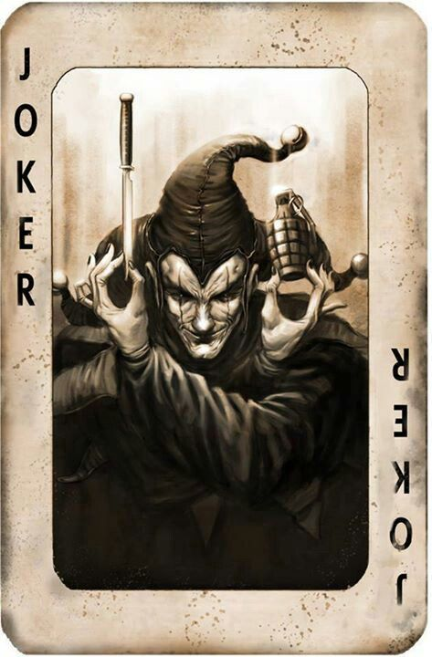

Sniper Rules
In Ultimate Chess, Jokers are called Snipers.

Winning with a Sniper
- The attacker wins the card battle normally. The target piece is captured.
- The attacker selects any one non-King piece from the opponent's remaining army and removes it from the board without a card battle.
Note: The bonus piece removal is immediate and requires no additional card play. The attacker chooses freely.
Armageddon — Both Players Play a Sniper
If both players play a Sniper as their face-up card in the same round, Armageddon ensues.
- Both the attacking piece and the defending piece are immediately removed from the board.
- Each player selects and removes three non-King pieces from the opponent's army, without card battles.
- Both players make their selections simultaneously. Don't wait for your opponent to choose first.
Important: Armageddon can dramatically change the board state. If either player has fewer than three non-King pieces remaining, they remove as many as they have.
← King Rules | Win Conditions →